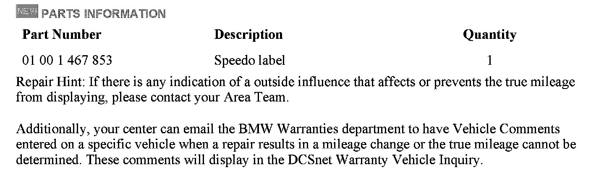

Instruments - Odometer Reading Can't Be Recovered
SI B62 01 95Instruments
November 2011
Technical Service
This Service Information bulletin supersedes SI B62 01 95 dated September 1995.
[NEW] designates changes to this revision
SUBJECT
[NEW] After an Odometer, Coding Plug or Instrument Cluster Replacement, the Mileage Displayed Reads Zero
MODEL
All
[NEW] SITUATION
The actual odometer reading cannot be recovered after a related repair.
[NEW] CAUSE
Both the primary and backup control modules that contain the "restore" mileage data are replaced at the same time.
The transfer of the stored mileage data from the old part to the new replacement part has failed.
[NEW] INFORMATION
Disclosure Requirements
Under regulations prescribed by the Secretary of Transportation that include the way in which information is disclosed and retained, a person transferring ownership of a motor vehicle shall give to the transferee the following written disclosure:
^ Disclosure of the cumulative mileage registered on the odometer.
^ Disclosure that the actual mileage is unknown due to modification or replacing a used part that shows the odometer reading is different from the number of miles the vehicle has actually traveled.
^ The Federal Odometer Act (49 US Code Section 32701 - 32705) makes provisions for the lawful service, repair, or replacement of odometers.
A. If the mileage registered by the odometer remains the same as before the service, repair, or replacement.
B. If the mileage cannot remain the same:
^ Adjust the odometer to read zero; and
^ The vehicle owner or his/her agent shall attach a written notice to the left door frame (B-pillar) specifying the mileage before and the date of the odometer service, repair, or replacement.
Note:
State-specific odometer regulations may also apply.
If it becomes necessary to replace an odometer, coding plug, light module or instrument cluster (resulting in the new odometer reading being reset to zero miles), a "non-removable" label is available from BMW NA to record the previous mileage.
On all repairs going forward, add the mileage on the label to the current odometer mileage to compute the "total" true mileage (document the mileage and the procedure on the repair order).
[NEW] The label must be ordered separately.

[NEW] WARRANTY INFORMATION